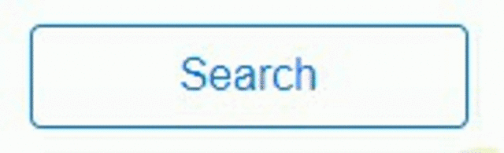

Adding a Loading Spinner to a Button with Blazor
I’ve been playing with Blazor for several weeks now, and it’s fantastic. For the uninitiated, Blazor allows you to write .NET code that runs in the browser through the power of WebAssembly (Wasm). This means that the amount of JavaScript you end up having to write to create a dynamic web UI is significantly reduced, or even eliminated (check out this Tetris clone @mistermag00 wrote running completely on Blazor with ZERO JavaScript).
Today my objective is much less ambitious than attempting to recreate a classic 1980s-era video game in the browser: I just want to change the state of a search button to indicate to the user that something is happening while we retrieve their results. Here’s what we’re shooting for:

Let’s start with the Razor view code:
@if (IsSearching)
{
<button class="btn btn-primary float-right search disabled" disabled><span class='fa-left fas fa-sync-alt spinning'></span>Searching...</button>
}
else
{
<button class="btn btn-primary btn-outline-primary float-right search" onclick="@OnSearchAsync">Search</button>
}
Here we have two versions of the button, and we determine which one to display based on an IsSearching boolean property in the Blazor component code.
The first button represents the state of the button while we’re searching. We set the visual state to disabled with the disabled CSS class and disable clicks with the disabled attribute. Both buttons have a custom search CSS class which just sets the width of the button so we don’t have a jarring width change when transitioning between states. I’m using a Font Awesome icon for my spinning icon (so don’t forget the link to their CSS in your HEAD), and animating it with a couple of custom CCS classes that we’ll look at in a minute.
The second button represents the state of the button when we’re not searching. It has the onclick handler calling into the OnSearchAsync method in my Blazor component code.
Speaking of my Blazor component code, let’s check it out…
public class SearchCriteriaBase : BlazorComponent
{
protected bool IsSearching { get; set; }
public async Task OnSearchAsync()
{
IsSearching = true;
StateHasChanged();
if (CheckIsValid())
{
// Make my long-running web service call and do something with the results
}
IsSearching = false;
StateHasChanged();
}
}
All that’s needed is a simple IsSearching property that I can set to switch between button states while searching. I just need to remember to call StateHasChanged() to let Blazor know it needs to update the DOM.
And finally, here’s the custom CSS to make the animation happen:
.fas.spinning {
animation: spin 1s infinite linear;
-webkit-animation: spin2 1s infinite linear;
}
@keyframes spin {
from {
transform: scale(1) rotate(0deg);
}
to {
transform: scale(1) rotate(360deg);
}
}
@-webkit-keyframes spin2 {
from {
-webkit-transform: rotate(0deg);
}
to {
-webkit-transform: rotate(360deg);
}
}
.fa-left {
margin-right: 7px;
}
.btn.search {
width: 10rem;
}
And that’s it. A simple button state transition with no Javascript, just the way I like it!
-Jon